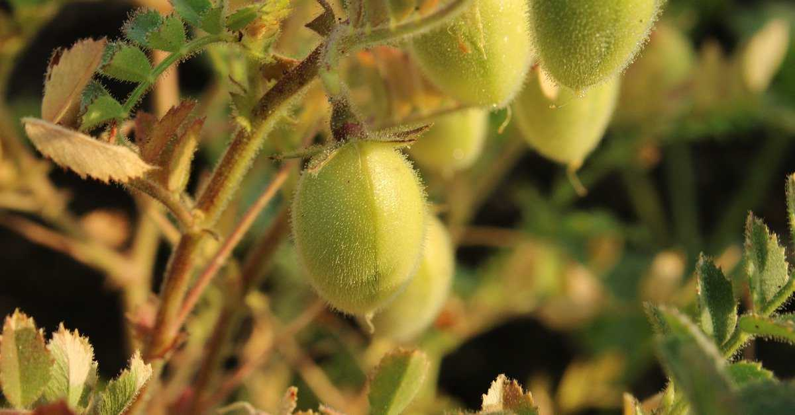
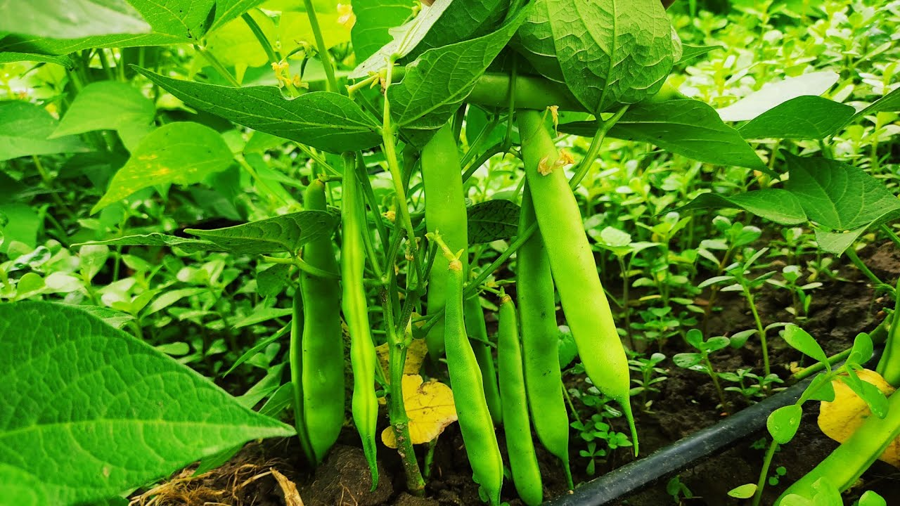
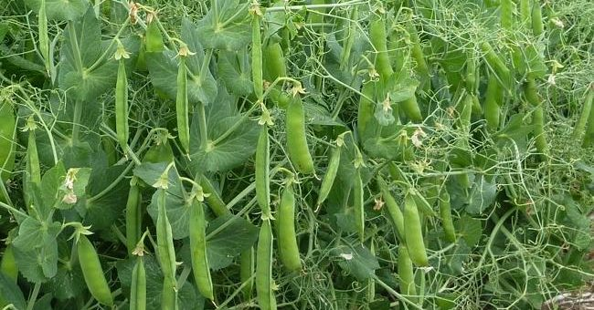

Türkiye'de tarım, istihdam, ihracat ve ulusal gelire yaptığı katkı ile önemli bir sektördür.
Türkiye Topraklarından Yaralanma Oranları:
Topraklarımızdan faydalanma oranı daha çok iklim ve yer şekilleri özelliklerine bağlıdır. Ülkemizde yüksek dağlık kesimler geniş alan kaplar. Dik yamaçlar çoktur. Buralarda topraktan faydalanma çok kısıtlıdır. Buna göre ülkemiz arazisinin % 36 ‘sı ekili-dikili alan, % 32’si çayır ve otlak, % 26 ‘sı orman ve % 6’sı diğer alanlar (yerleşim birimleri , tarıma elverişsiz çıplak kayalıklar gibi) dır.Tarımdaki makinalaşmanın etkisiyle çayır ve otlakların alanı daralırken, tarım alanlarımız genişlemektedir.Bölge Yüzölçümüne Göre Ekili Dikili Alanların Oranları:
1. Marmara Bölgesi: %302. İç Anadolu Bölgesi: %27
3. Ege Bölgesi: %24
4. G.Doğu Anadolu Bölgesi: %20
5. Akdeniz Bölgesi: %18
6. Karadeniz Bölgesi: %16
7. Doğu Anadolu Bölgesi: %10
Türkiye’de Tarımı Etkileyen Faktörler:
1. Sulama: Türkiye tarımında en büyük sorun sulama sorunudur. Tarımda sulama ihtiyacının en fazla olduğu bölgemiz G.Doğu Anadolu Bölgesi iken , bu sorunun en az olduğu bölgemiz Karadeniz Bölgesidir.Akarsularımızın derin vadilerden akması ve rejimlerinin düzensiz olmasından dolayı sulamada yeterince faydalanamıyoruz. Bunun için mutlaka akarsular üzerindeki baraj sayısı artırılmalıdır. Sulama Sorunu Çözüldüğünde; Üretim artar. Nadas olayı ortadan kalkar. Tarımda iklime bağlılık büyük oranda azalır. Üretimde süreklilik sağlanır. Üretim dalgalanmaları önlenir. Daha önce sebze tarımı yapılmayan bir yerde sebze tarımı da yapılmaya başlanır. Tarım ürün çeşidi artar. Köyden Kente göçler azalır. Yılda birden fazla ürün alınabilir. Bu konuda en şanslı bölgemiz Akdeniz, en şanssız bölgemiz Doğu Anadolu Bölgesidir2. Gübre Kullanımı: Tarımda sulama sorunu çözüldükten sonra üretimi daha da artırmak için gübre kullanımı artırılmalıdır. Ülkemizde hayvancılığın gelişmiş olması tabii gübre imkanını oluşturmaktadır. Ancak yurdumuzda tabii gübrenin yakacak olarak kullanılması bu olumlu durumu ortadan kaldırmaktadır. Ülkemizde üretilen suni gübre yeterli olmadığı için ithal (Fas, Tunus, Cezayir gibi ülkelerden) etmekteyiz. Bu da maliyeti artırdığından çiftçilerimiz yeterince gübre kullanamamaktadır. Gübre ihtiyacı, tabii gübrenin yakacak olmaktan kurtarılması ve gübre fabrikalarının artırılması ile karşılanabilir.
3.Tohum Islahı: Sulama ve gübre sorunu çözüldükten sonra verimi daha da artırmak için kaliteli tohum kullanılmalıdır. Ülkemizde kalite tohum üretme konusunda devlet üretme çiftlikleri ve tohum ıslah istasyonları çalışmalar yapmaktadır. Ancak kaliteli tohum ithali devam etmektedir.
4.Makine Kullanımı: Ürünün zamanında ekimi, hasadı ve yüksek verim için makine kullanımı şarttır. Ancak makine kullanımı yurdumuzda yeterli ölçüde gelişmemiştir. Sebepleri: Makine kullanıma elverişsiz alanların varlığı, Makine kullanımının ekonomik olmadığı küçül alanların varlığı, İş gücünün bazı bölgelerde daha ucuz olması, Makine fiyatlarının çiftçinin alım gücünün üstünde olması
5.Zirai Mücadele: Tarımdaki hastalıkların, yabani otların ve haşerelerin meydana getireceği üretim düşüklüğünü önlemek için ilaçlı mücadele şarttır. Zirai mücadelede daha çok ilaç kullanılmaktadır.
6.Toprak Bakımı: Tarla yağışlardan önce sürülmeli , yabancı otlardan arındırılmalıdır. Erozyona karşı korunmalıdır.
7.Toprak Analizi: Toprak analizleri ile en iyi verim alınabilecek ürün belirlenir. Ayrıca toprağın ihtiyacı olan mineraller tespit edilerek kullanılacak gübre belirlenir.
Türkiye Yetişen Tarım Ürünleri
Türkiye'de Yetiştirilen Tahıl Ürünleri: Buğday, arpa, çavdar, yulaf, mısır ve pirinç gibi ürünler tahıllar grubuna girmektedir. Tahıllara "hububat" da denmektedir. Türkiye'de en fazla ekim alanına sahip olan ve en fazla üretilen tarım ürünleri %56 ile tahıllardır. Tahılların temel besin kaynağı olması, Türkiye ikliminin tahıl üretimine uygun olması ve nüfus artışına bağlı olarak tahıl ihtiyacının da artması, Türkiye'de tahıl üretimini artıran etkenlerden olmuştur.2022 yılında TÜİK tarafından açıklanan verilerde 38,7 milyon ton tahıl ürünü yetiştirilmiştir.2023 yılında ise tahıl üretimi 1 önceki yıla göre %9,1 artarak 42,2 milyon ton oldu.Türkiye'de yetişen bazı tahıllar:
Buğday

Arpa

Çavdar

Yulaf

Mısır

Pirinç(çeltik)

Pamuk

Tütün

Şeker Pancarı

Çay

Haşhaş

Keten

Zeytin

Ayçiçeği

Soya Fasulyesi

Yer Fıstığı

Susam
Fasulye, bakla, nohut, soya, mercimek, bezelye gibi ürünlerden oluşur. Daha çok kuru şeklide tüketilmekte olup Türkiye'nin iç ve dış ticaretinde pay sahibidirler. Türkiye 1980'li yıllardan itibaren baklagil üretiminde ivme kazanmıştır. Bu ivmenin nedenler arasında nadas alanlarının kısıtlanması ve kırsal kesim projelerinin desteklenmesi örnek verilebilir. 2005 yılı istatistiklerine göre Türkiye'de bulunan 28.6 milyon hektarlık tarım arazisinin 18.7 milyonluk hektarında tarla ürünleri yetiştirilmektedir. 18.7 milyonluk alanın % 6.2'sinde yemeklik baklagiller yetiştirilmektedir. Bakliyat üretiminde nohut ilk sırada yer almaktadır, ardından da sırasıyla mercimek, fasulye, börülce ve bezelye gelmektedirler. Türkiye'de yetişen bazı baklagiller:

Kırmızı Mercimek

Nohut

Yeşil Fasulye

Bezelye

Turunçgil

İncir

Elma

Üzüm

Kayısı

Kivi

Kiraz

Muz